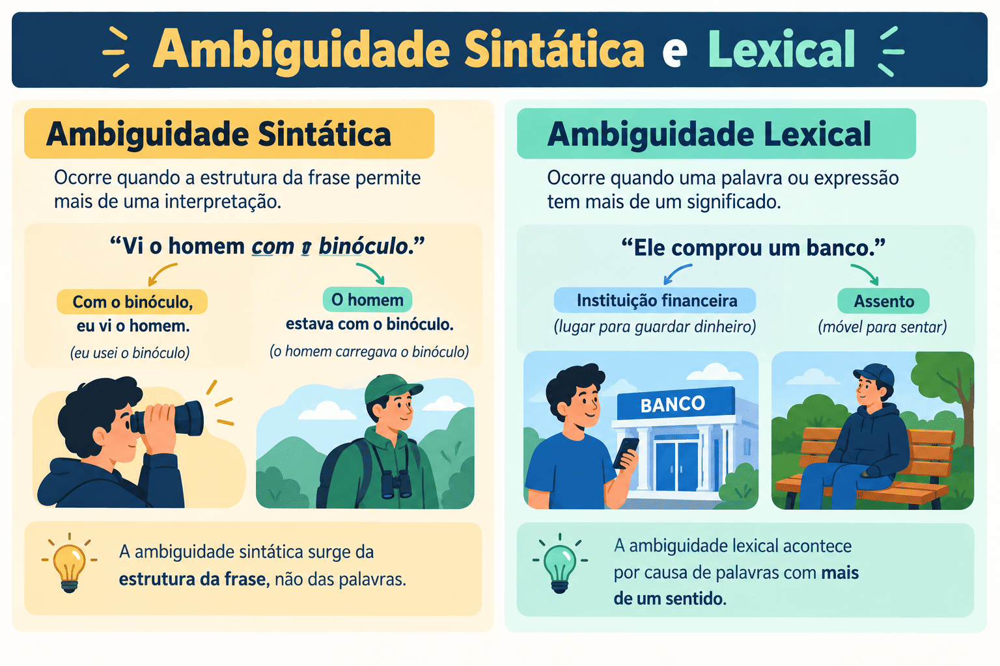

Ambiguidade Sintática e Lexical: Causas, Exemplos e Como Evitar
A clareza e a precisão informativa são preceitos fundamentais da comunicação eficiente e da norma-padrão da Língua Portuguesa. Quando uma frase ou período é construído de maneira que possibilita mais de uma interpretação coerente pelo leitor, ocorre o fenômeno da ambiguidade (também denominado anfibologia).
Enquanto na literatura, nas artes e na publicidade a duplicidade de sentidos é frequentemente explorada como recurso estilístico, poético ou persuasivo (ambiguidade intencional), na prosa acadêmica, nas provas de concursos públicos e nas redações do ENEM e do PAES UEMA, a ambiguidade involuntária é considerada um vício de linguagem prejudicial, acarretando penalizações severas nas competências de correção gramatical, coesão e clareza argumentativa.
Neste guia completo do Mestre Kira, você aprenderá as diferenças fundamentais entre a ambiguidade lexical e a ambiguidade sintática, conhecerá as causas mais frequentes de duplo sentido (como o mau uso de pronomes possessivos, orações reduzidas e termos deslocados), verá técnicas práticas de reestruturação frasal e testará seus conhecimentos em um quiz de 10 questões comentadas.

O que é ambiguidade?
A ambiguidade é a ocorrência de duplicidade ou multiplicidade de sentidos em um enunciado, gerando incerteza sobre qual é a mensagem que o autor realmente pretendeu transmitir.
Conforme a origem do problema interpretativo, o fenômeno classifica-se em dois tipos primordiais:
- Ambiguidade Lexical: provocada pelo significado polissêmico de uma palavra isolada ou pelo uso de termos homônimos sem suficiente contextualização;
- Ambiguidade Sintática (ou estrutural): provocada pela má disposição, ordenação ou pontuação das palavras e orações dentro do período.
Ambiguidade Intencional vs. Vício de Linguagem: Em poemas, crônicas e propagandas, o duplo sentido pode enriquecer a expressividade. Já em redações dissertativo-argumentativas e documentos oficiais, o duplo sentido não planejado compromete a objetividade e é classificado como vício de linguagem (anfibologia).
Ambiguidade Lexical
A ambiguidade lexical decorre do uso de vocábulos que possuem múltiplos significados (polissemia) em contextos que não esclarecem qual deles deve ser considerado pelo interlocutor.
O pesquisador sentou-se no banco da praça central para analisar os dados do banco.
- banco (primeira ocorrência): refere-se ao assento público de madeira ou concreto;
- banco (segunda ocorrência): pode referir-se à instituição financeira ou a um banco de dados digital;
- problema: a ausência de complementação gera hesitação interpretativa momentânea.
A mãe comprou um brinquedo para a criança que estava quebrado.
Quem ou o que estava quebrado? O brinquedo recém-adquirido ou a criança (metaforicamente doente/cansada)? A polissemia e o arranjo criam duplicidade de leitura.
Causas clássicas da Ambiguidade Sintática
A ambiguidade sintática é a mais recorrente e prejudicial em redações formais. Decorre de falhas na arquitetura dos termos da oração. As principais causas estruturais são:
1. Emprego ambíguo de pronomes possessivos de 3ª pessoa (seu, sua, seus, suas)
Quando a oração cita duas pessoas e introduz o pronome possessivo seu/sua, o leitor não consegue identificar a quem pertence o termo determinado:
Enunciado Ambíguo
“O diretor comunicou ao professor que sua demissão havia sido revogada.”
De quem era a demissão? Do diretor ou do professor?
Reestruturação Precisa
“O diretor comunicou ao professor que a demissão deste havia sido revogada.”
Ou: “O diretor comunicou a sua própria demissão ao professor...”
Técnica de desambiguação: Para eliminar a dúvida com pronomes possessivos de terceira pessoa, substitua seu/sua pelas formas dele, dela, deles, delas ou mencione explicitamente o nome do possuidor.
2. Má colocação de adjuntos adverbiais
Quando um adjunto adverbial é posicionado entre duas orações ou elementos, ele pode qualificar tanto a ação que vem antes quanto a que vem depois:
Enunciado Ambíguo
“O homem declarou que precisava de ajuda com frequência.”
Ele declarava com frequência que precisava de ajuda, ou declarou uma única vez que precisava de ajuda frequentemente?
Reestruturação Precisa
“Com frequência, o homem declarava que precisava de ajuda.” (o ato de declarar era frequente)
Ou: “O homem declarou que necessitava de ajuda contínua.” (a necessidade era frequente)
3. Pronome relativo "que" com antecedente duvidoso
Quando o pronome relativo que vem posicionado após dois substantivos, ele pode retomar o núcleo principal ou o termo que o acompanha:
Conversei com a mãe do estudante que foi premiada no evento.
Quem foi premiada? A mãe ou o estudante? Se for o estudante, a concordância deveria ser “premiado”; se os dois termos forem do mesmo gênero (ex.: “a irmã da professora que foi premiada”), a confusão torna-se insolúvel apenas com o “que”.
Solução definitiva: Substitua o pronome relativo invariável “que” por o qual, a qual, os quais, as quais para marcar com exatidão o gênero e o número do referente!
“Conversei com a mãe do estudante, a qual foi premiada...” (refere-se à mãe).
“Conversei com a mãe do estudante, o qual foi premiado...” (refere-se ao estudante).
4. Orações reduzidas mal encadeadas
Orações reduzidas (de gerúndio ou particípio) sem sujeito explícito podem atribuir a ação ao sujeito incorreto da oração vizinha:
Enunciado Ambíguo
“O policial viu o suspeito correndo no parque.”
Quem estava correndo? O policial (sujeito) enquanto patrulhava ou o suspeito (objeto)?
Reestruturação Clara
“Enquanto corria no parque, o policial avistou o suspeito.” (o policial corria)
Ou: “O policial avistou o suspeito que corria no parque.” (o suspeito corria)
5. Falta ou emprego incorreto da pontuação
A ausência ou o deslocamento de vírgulas pode transformar um vocativo em sujeito ou uma oração restritiva em explicativa, distorcendo o sentido da mensagem:
Não espere o resultado sair. / Não, espere o resultado sair.
A presença da vírgula inverte por completo a orientação dada ao interlocutor: de não aguardar para solicitar que aguarde.
Quadro Comparativo: Ambiguidade vs. Clareza Textual
| Causa Estrutural | Construção Ambígua | Construção Clara e Precisa |
|---|---|---|
| Pronome possessivo de 3ª pessoa | O médico disse ao paciente que seu estado era grave. | O médico disse ao paciente que o estado deste era grave. |
| Pronome relativo "que" | Encontrei a prima do amigo que viajou. | Encontrei a prima do amigo, a qual viajou ontem. |
| Adjunto adverbial intercalado | Pessoas que praticam esportes rapidamente melhoram a saúde. | Pessoas que praticam esportes melhoram rapidamente a saúde. |
| Oração de gerúndio ambígua | Vi o motorista ultrapassando o sinal vermelho. | Vi que o motorista ultrapassava o sinal vermelho. |
| Polissemia sem contexto | O guarda prendeu o ladrão em sua casa. | O guarda prendeu o ladrão na casa do próprio criminoso. |
A Ambiguidade na Redação do ENEM e PAES UEMA
Em redações de exames vestibulares, a ambiguidade atinge diretamente a avaliação de três competências fundamentais:
- Competência 1 (Norma-Padrão e Estrutura Sintática): A anfibologia evidencia falhas de sintaxe e ordenamento frasal, impedindo que o texto atinja a nota máxima de domínio estrutural;
- Competência 3 (Projeto de Texto e Argumentação): Períodos com duplo sentido geram obscuridade argumentativa, fragilizando a tese e confundindo o leitor quanto ao posicionamento do autor;
- Competência 4 (Coesão e Referenciação): Pronomes mal empregados (como este/esse/seu) provocam falhas graves na cadeia de referenciação anafórica.
Atenção na formulação da proposta de intervenção: Evite ambiguidades sobre quem deve executar a ação. Frases como *“O governo deve conscientizar a população com o auxílio da escola sobre seus deveres”* deixam incerto de quem são os deveres (da escola ou da população).
Passo a passo para eliminar ambiguidades na revisão
- Faça a leitura pelo ponto de vista do leitor leigo: Pergunte-se: “Se alguém ler esta frase sem conhecer o meu pensamento prévio, haverá mais de uma interpretação possível?”.
- Rastreie todos os pronomes possessivos de 3ª pessoa: Circule palavras como seu, sua, seus, suas. Há mais de uma pessoa mencionada antes deles? Se houver, substitua por dele, dela, do jovem, do gestor.
- Examine os pronomes relativos "que": Se houver dois substantivos antecedentes, teste se a troca por o qual / a qual evita dúvidas de identificação.
- Reposicione advérbios soltos: Aproxime adjuntos adverbiais da palavra exata que eles pretendem modificar.
- Converta orações reduzidas ambíguas em desenvolvidas: Em vez de gerúndios soltos, use orações com conjunção e sujeito explícito (ex.: “Quando ele saía da escola...”).
Quiz — Ambiguidade Sintática e Lexical
Questão 1 — Em “O advogado comunicou ao juiz que seu processo estava concluído”, ocorre ambiguidade porque:
Questão 2 — Qual das seguintes frases apresenta ambiguidade estrutural decorrente da má colocação do adjunto adverbial?
Questão 3 — Em “O médico examinou o paciente sentado na maca”, para eliminar a ambiguidade e deixar claro que o paciente estava sentado, deve-se reescrever:
Questão 4 — A ambiguidade lexical diferencia-se da sintática porque:
Questão 5 — Em “Conheci a filha do embaixador que estuda medicina em Paris”, o recurso mais eficaz para evidenciar que quem estuda em Paris é a filha é:
Questão 6 — Assinale o período inteiramente ISENTO de ambiguidade:
Questão 7 — Na publicidade e nas charges, a ambiguidade é frequentemente utilizada como:
Questão 8 — Em “A policial prendeu o suspeito em sua residência”, a duplicidade de sentido decorre de:
Questão 9 — Para reescrever a frase da questão 8 indicando expressamente que a prisão ocorreu na casa da policial, deve-se grafar:
Questão 10 — Na redação dissertativo-argumentativa do ENEM, a ambiguidade voluntária ou involuntária prejudica especialmente a:
Resumo sobre ambiguidade sintática e lexical
- A ambiguidade é a possibilidade de interpretar um enunciado de mais de uma maneira.
- A ambiguidade lexical decorre do uso de termos polissêmicos ou homônimos sem contextualização suficiente.
- A ambiguidade sintática resulta do arranjo e ordenamento defeituoso das palavras na oração.
- O pronome possessivo de 3ª pessoa (seu/sua) é a principal fonte de anfibologia; prefira dele, dela ou repita o substantivo.
- O pronome relativo que após dois termos gera dúvida; desambigue utilizando o qual, a qual, os quais, as quais.
- Adjuntos adverbiais mal posicionados podem modificar a oração errada; aproxime-os do verbo pretendido.
- Orações reduzidas de gerúndio exigem atenção para não atribuir a ação ao termo indevido.
- Na literatura e na publicidade, a ambiguidade é um recurso expressivo intencional e legítimo.
- Na redação do ENEM e vestibulares (como PAES UEMA), a ambiguidade é vício de linguagem penalizado nas competências 1, 3 e 4.
Conclusão
A eliminação da ambiguidade é um dos pilares da escrita madura e consciente. Um texto verdadeiramente bem escrito não é apenas aquele que pode ser compreendido, mas aquele que não pode ser incompreendido.
Ao revisar suas produções textuais para o ENEM, vestibulares e concursos, rastreie pronomes possessivos, relativos e adjuntos adverbiais soltos. Essa vigilância sintática garante clareza absoluta aos argumentos, valoriza o projeto de texto e assegura notas elevadas nas avaliações mais rigorosas de Língua Portuguesa.
Perguntas frequentes sobre ambiguidade
O que é anfibologia?
Anfibologia é o sinônimo gramatical de ambiguidade sintática. Trata-se do vício de linguagem caracterizado pela duplicidade de sentido causada pela má construção sintática do período.
Como evitar a ambiguidade gerada pela palavra "seu/sua"?
Substitua o pronome possessivo por expressões mais precisas como dele, dela, do autor, do candidato, ou explicite claramente a quem pertence o termo (ex.: “o seu próprio projeto”).
Qual a diferença entre ambiguidade e polissemia?
A polissemia é a propriedade linguística de uma palavra possuir múltiplos significados no dicionário. A ambiguidade é o problema textual que ocorre quando essa palavra é colocada em uma frase sem que o contexto esclareça qual dos significados foi pretendido.
Por que a troca de "que" por "o qual" resolve ambiguidades?
Porque enquanto a palavra “que” é invariável, as formas o qual, a qual, os quais, as quais flexionam-se em gênero e número, apontando com precisão a qual substantivo antecedente a oração se refere.
A ambiguidade pode ser usada intencionalmente?
Sim. Em textos poéticos, no humor, em charges e em peças publicitárias, o duplo sentido é amplamente explorado para chamar a atenção do leitor, provocar reflexão ou criar efeitos irônicos.
Conteúdos relacionados
- Termos Integrantes e Acessórios da Oração
- Orações Coordenadas e Subordinadas: como reconhecer e classificar
- Conjunções da Língua Portuguesa: o que são, tipos, usos e exemplos explicados
- Locuções Adverbiais: o que são, tipos e exemplos
- Sintaxe: estrutura da oração e relações entre as palavras
- Interpretação e Produção Textual
- Gramática da Língua Portuguesa: Guia Completo
- Conteúdos de Gramática — Página 2
- Conteúdos de Gramática — Página 3
- Conteúdos de Gramática — Página 4
Referências bibliográficas
- BECHARA, Evanildo. Moderna Gramática Portuguesa. 37. ed. Rio de Janeiro: Nova Fronteira, 2009.
- CEGALLA, Domingos Paschoal. Novíssima Gramática da Língua Portuguesa. 48. ed. São Paulo: Companhia Editora Nacional, 2008.
- CUNHA, Celso; CINTRA, Lindley. Nova Gramática do Português Contemporâneo. 6. ed. Rio de Janeiro: Lexikon, 2013.
- GARCIA, Othon Moacyr. Comunicação em Prosa Moderna. 27. ed. Rio de Janeiro: Editora FGV, 2010.
- KOCH, Ingedore Villaça; ELIAS, Vanda Maria. Ler e compreender: os sentidos do texto. São Paulo: Contexto, 2006.
Explore Outros Conteúdos
Continue seus estudos acessando outras seções do site Mestre Kira: